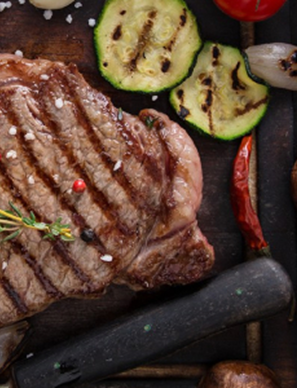
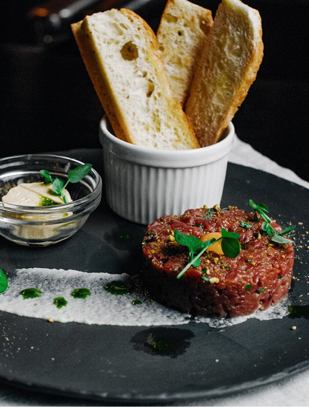
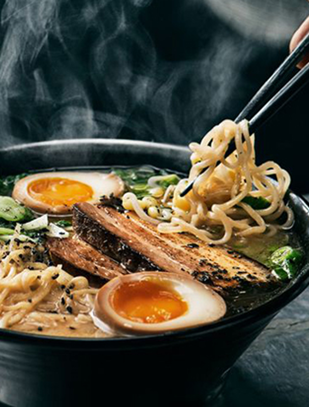
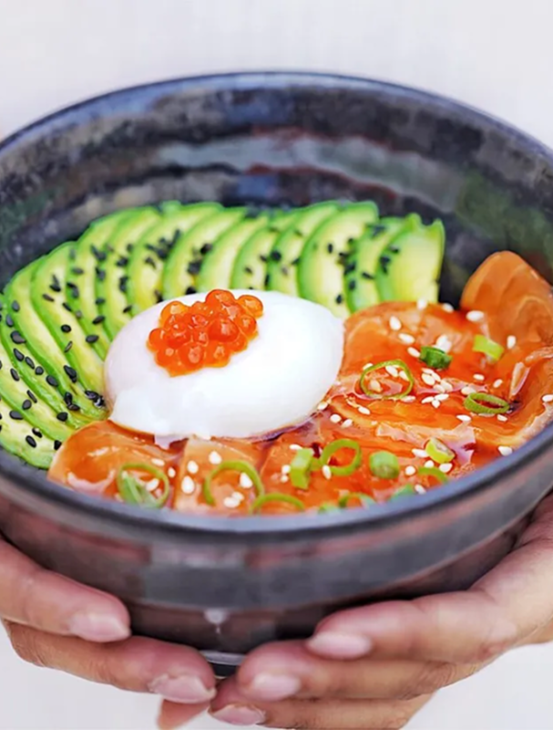
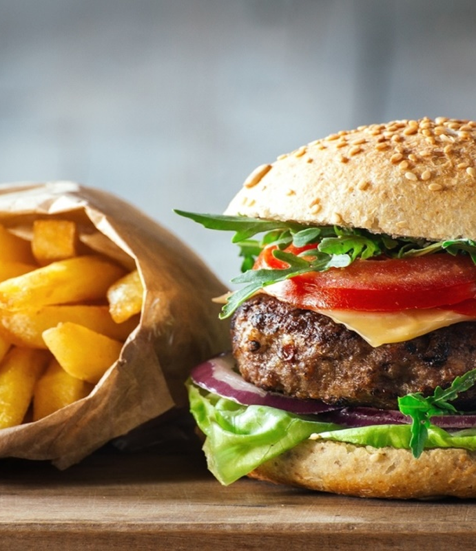
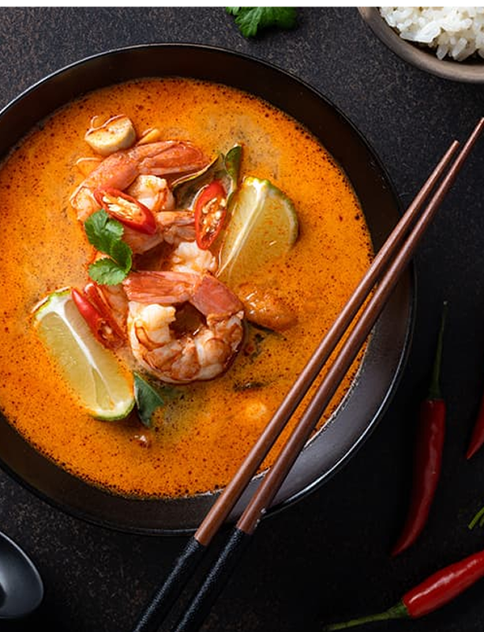
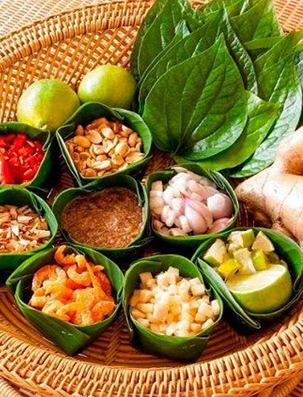
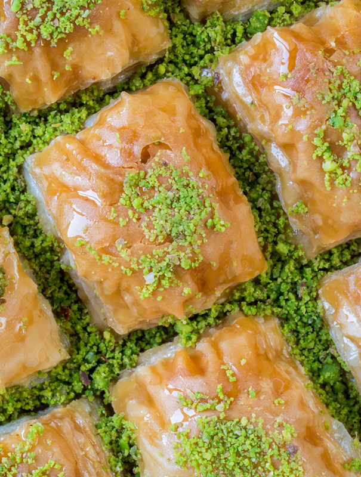
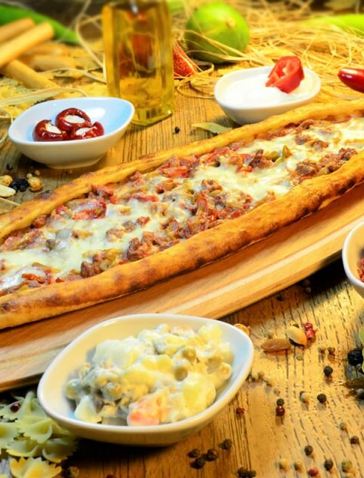

Европейская
От ароматных прованских трав во французском рататуе до сытного немецкого айсбайна, от изысканных итальянских трюфельных паст до уютного венгерского гуляша — каждый регион Европы создал свои кулинарные шедевры, отражающие историю, климат и характер местных жителей.
Азиатская
Это гармония пяти вкусов: острое том-ям, нежное суши, ароматное фо. Здесь рис и лапша превращаются в искусство — от китайских димсамов до корейского кимчи.
Американская
От нежных нью-йоркских чизкейков до пикантного техасского чили, от калифорнийских тостов с авокадо до огненных нэшвиллских крылышек — каждый штат привнёс свои уникальные вкусы.
Тайская
Это гармония контрастов: обжигающий чили смягчается кокосовым молоком, кислый лайм сочетается с солёным рыбным соусом. Хрустящий сом там, ароматный том-ям, золотистый пад-тай — каждое блюдо создаёт взрыв эмоций.
Турецкая
Это гармония кочевых традиций и дворцовых изысков. Кебабы с ароматом дымных углей, нежная пахлава с фисташками, хрустящая симит — каждое блюдо рассказывает многовековую историю.
